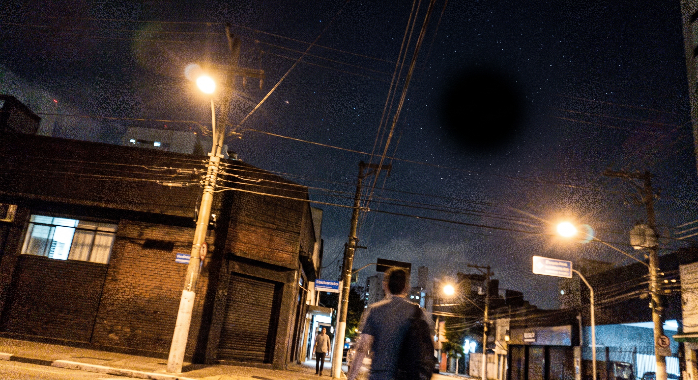

Observatório registra "buraco" temporário no céu noturno
O fenômeno durou pouco mais de sete minutos, encobriu estrelas em uma pequena região do céu e desapareceu sem deixar qualquer resíduo detectável, segundo astrônomos locais.

Astrônomos de um observatório local registraram durante a madrugada uma anomalia incomum no céu noturno. O fenômeno, descrito inicialmente como uma espécie de "buraco" completamente escuro, permaneceu visível por pouco mais de sete minutos antes de desaparecer de forma repentina.
A ocorrência foi percebida primeiro pelos equipamentos de observação e, poucos segundos depois, também pôde ser vista a olho nu por integrantes da equipe. Segundo os pesquisadores, estrelas normalmente visíveis naquela região desapareceram temporariamente durante o evento.
Sem causa conhecida
Os primeiros dados coletados descartam falhas nos telescópios, presença de nuvens ou qualquer outro fenômeno atmosférico comum. Sensores também não registraram alterações significativas de temperatura, radiação ou atividade eletromagnética.
Uma segunda equipe analisou os instrumentos após o ocorrido, mas não encontrou defeitos. Diferentes câmeras do observatório registraram a mesma abertura escura surgindo praticamente no mesmo momento.
“Não parecia haver alguma coisa escondendo as estrelas. Parecia que aquela parte do céu simplesmente não estava mais lá.” — astrônoma responsável pelo turno da madrugada
Especialistas ainda não conseguem explicar a origem do fenômeno. Entre as hipóteses estão uma anomalia espacial rara, uma distorção temporária na passagem da luz ou algum tipo de interferência desconhecida.